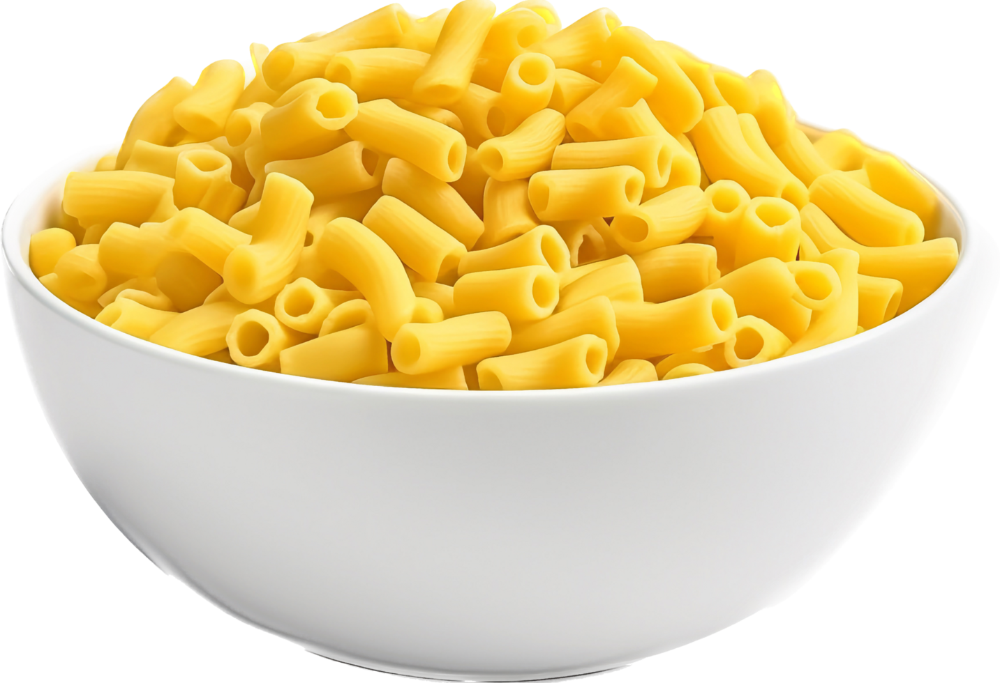

PASOS PARA LOS MACARRONES
Cocina 200 g de macarrones en agua con sal según las indicaciones del paquete y reserva. Sofríe en una sartén un diente de ajo picado, luego añade una cebolla y 2 lonchas de panceta picadas, cocinando hasta que la cebolla esté dorada. Agrega una lata de tomate triturado, sal y una cucharadita de orégano, y cocina durante 10-15 minutos. Mezcla los macarrones con la salsa y cocina 2-3 minutos más para integrar sabores. ¡Listo para servir!
